下から覗かれるから [梅吉]
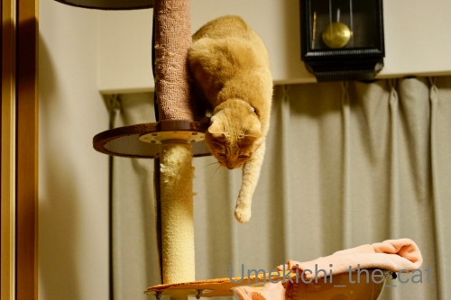
梅吉さんがキャットタワーから急いで降りてきたのは

おかーさんがタワーの下から覗き込んでいたから。
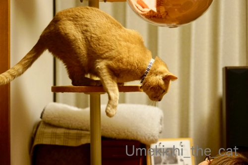
![[猫]](https://blog.ss-blog.jp/_images_e/101.gif) したからのぞいたら わしのぱんちおみまいするでー
したからのぞいたら わしのぱんちおみまいするでー

空を切るねこぱんちw全然届いていないし( ´艸｀)
ねこは隙間や物陰から覗くと喜びますよね。おしりぷりぷりしながら飛びついて来たり。
梅吉は下から覗くように見上げられるのが一番すき。
色々なツボがあるものだと梅吉に教えてもらう日々ですw

クリアボールにまあるく綺麗に収まってお昼寝。
惜しい！お耳が切れてますw（おっとへw）
おっと、写真対応してくれましたm(_ _)m

なんばで見かけた台湾のランタン。台南市の子供達がつくったのかな？

台湾の旅行客の方は大歓迎なんですけど、ね。。。
「奈良で武漢滞在歴のない日本人が新型コロナウィルスに感染」のニュースが報じられたのち
近所のドラッグストアのマスクが完全に売り切れました。
乗客から運転手さんに・・・濃厚接触者じゃなくても「人から人」にうつるんですよね。
飛沫感染なのか空気感染なのか・・・・・
マスク、うがい、手洗い。
あとはお家に入る前に衣服や持ち物をよく払うのも有効かな？
手で払うより衛生的では、と専用のブラシを玄関（の外）に置きました。
今の所自衛するしか手段はなさそうです。
 ↑ガブッと一押し↑
↑ガブッと一押し↑
梅吉さんがキャットタワーから急いで降りてきたのは
おかーさんがタワーの下から覗き込んでいたから。
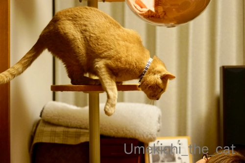
空を切るねこぱんちw全然届いていないし( ´艸｀)
ねこは隙間や物陰から覗くと喜びますよね。おしりぷりぷりしながら飛びついて来たり。
梅吉は下から覗くように見上げられるのが一番すき。
色々なツボがあるものだと梅吉に教えてもらう日々ですw
クリアボールにまあるく綺麗に収まってお昼寝。
おっと、写真対応してくれましたm(_ _)m
なんばで見かけた台湾のランタン。台南市の子供達がつくったのかな？
台湾の旅行客の方は大歓迎なんですけど、ね。。。
「奈良で武漢滞在歴のない日本人が新型コロナウィルスに感染」のニュースが報じられたのち
近所のドラッグストアのマスクが完全に売り切れました。
乗客から運転手さんに・・・濃厚接触者じゃなくても「人から人」にうつるんですよね。
飛沫感染なのか空気感染なのか・・・・・
マスク、うがい、手洗い。
あとはお家に入る前に衣服や持ち物をよく払うのも有効かな？
手で払うより衛生的では、と専用のブラシを玄関（の外）に置きました。
今の所自衛するしか手段はなさそうです。
マタタビキャンディの嗜み方 [梅吉]

またたびキャンディはまず手を清め

かほりを楽しみ

そこから一気に

がぶ〜っと！

ポイントは両手でしっかりホールドすることのようです0(≧▽≦)0
こんな小さなものでもガブガブしながら蹴り倒すので
自分の顔まで蹴とばしてしまわないかと心配になるのですが・・・
上手いことちゃんと顔は避けているのですよねー。不思議です＾＾

遊び疲れての寝入り端。無防備な寝顔w
窓の外に見えるもの [梅吉]
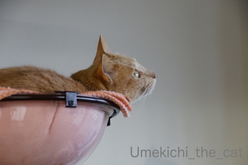
梅吉さんが真剣に見つめているのは

カラスさん。
クリアボールでくつろぐ梅吉の視界に入ってきます。

わざと めのまえ ちょろちょろしよる
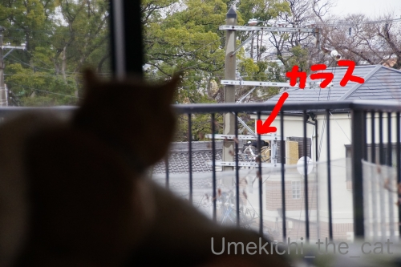
どうにもからかわれている感じがしてなりません(⌒-⌒;
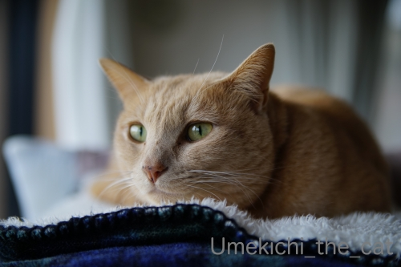
からかわれているにしても大切なコミュニケーションを取っているにしても
明るい時間カラスさんが飛び回るのを見つめるのは良いのですが・・・・・
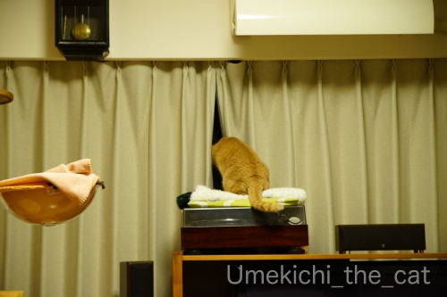
夜にも窓の外をチェックするのはや〜め〜て〜(꒦ິ⌑꒦ີ)
人や車はもちろん真っ暗だしカラスさんももういません。
一体何を見つめているのー！！
部屋の隅をじっとみられるのも嫌ですが外を見られるのも嫌ですw
↑ガブッと一押し↑
梅吉さんが真剣に見つめているのは
カラスさん。
クリアボールでくつろぐ梅吉の視界に入ってきます。
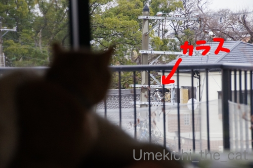
どうにもからかわれている感じがしてなりません(⌒-⌒;
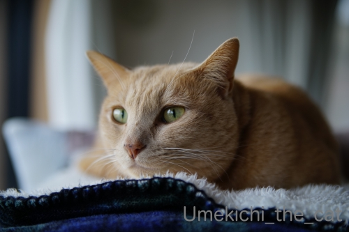
からかわれているにしても大切なコミュニケーションを取っているにしても
明るい時間カラスさんが飛び回るのを見つめるのは良いのですが・・・・・
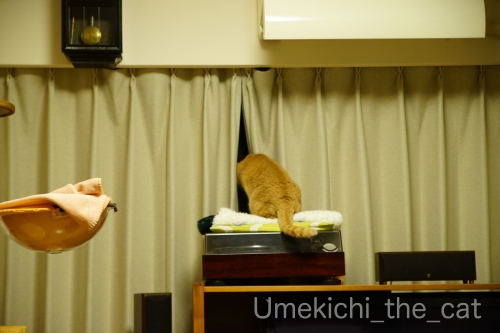
夜にも窓の外をチェックするのはや〜め〜て〜(꒦ິ⌑꒦ີ)
人や車はもちろん真っ暗だしカラスさんももういません。
一体何を見つめているのー！！
部屋の隅をじっとみられるのも嫌ですが外を見られるのも嫌ですw
続：下僕を観察する梅吉 [梅吉]
前回記事の「クリアボールから下僕を観察する梅吉の目」
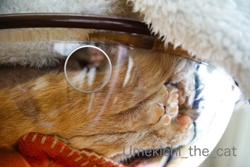
円の中の部分少し拡大してみました。
覗いているのは片目だけ、おわかりになりましたか？( ´艸｀)

わかりやすい写真だとこんな感じです。

のぞいているので目つきが悪いでーす (⌒-⌒;

ここ数日大阪もちょっとばかり寒くなってきました。
（それでも平年よりもずっと暖かいけど）
寒い日はやっぱり下僕の上でちゅうちゅうが最高です。
お互いにぬくぬく！
********************************************************************************************************
年末温泉に招待してもらったお礼にと実家から「白い恋人」が送られてきました。
美味しくて好きなんですが自分では買わないお菓子なので素直に嬉しい！
（地元の名物ってそんなものだったりしますよね？）

包装を解いて「あれっ？」て。
なんとー！缶に梅吉がプリントされてました。
温泉で撮った写真を送ったのですが（写真をプリントするなんて何年振りだったろう）
その中に紛れ込ませた（笑）写真を使ったようです。
母、GJ！！
石屋製菓→白い恋人 オリジナル缶
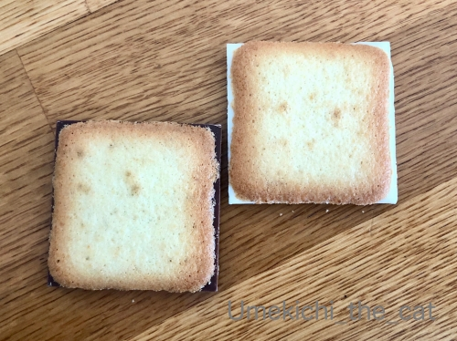
久々に食べた白い恋人。
こんなにチョコレートがはみ出してましたっけ？？？
ラングドシャクッキーが小さくなったような・・・・・
ホワイトチョコレートには否定的なんですがこれは美味しいと思う。
でもやっぱり普通のチョコレートが挟まっている方が好き。入ってる枚数少ないんだけどw
↑ガブッと一押し↑
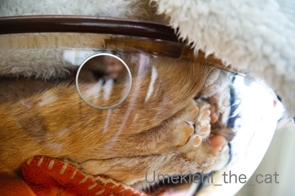
円の中の部分少し拡大してみました。
覗いているのは片目だけ、おわかりになりましたか？( ´艸｀)
わかりやすい写真だとこんな感じです。
のぞいているので目つきが悪いでーす (⌒-⌒;
ここ数日大阪もちょっとばかり寒くなってきました。
（それでも平年よりもずっと暖かいけど）
寒い日はやっぱり下僕の上でちゅうちゅうが最高です。
お互いにぬくぬく！
********************************************************************************************************
年末温泉に招待してもらったお礼にと実家から「白い恋人」が送られてきました。
美味しくて好きなんですが自分では買わないお菓子なので素直に嬉しい！
（地元の名物ってそんなものだったりしますよね？）
包装を解いて「あれっ？」て。
なんとー！缶に梅吉がプリントされてました。
温泉で撮った写真を送ったのですが（写真をプリントするなんて何年振りだったろう）
その中に紛れ込ませた（笑）写真を使ったようです。
母、GJ！！
石屋製菓→白い恋人 オリジナル缶
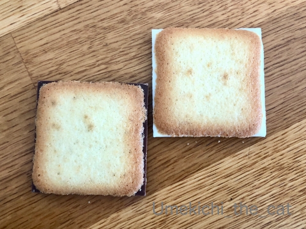
久々に食べた白い恋人。
こんなにチョコレートがはみ出してましたっけ？？？
ラングドシャクッキーが小さくなったような・・・・・
ホワイトチョコレートには否定的なんですがこれは美味しいと思う。
でもやっぱり普通のチョコレートが挟まっている方が好き。入ってる枚数少ないんだけどw
乾燥の季節 [梅吉]
乾燥しがちな日が続きますね。
梅吉を触るとぱちっと静電気が起きて嫌な顔されることもしばしば(⌒-⌒;

乾燥して？くちびるが歯にくっついて閉まらなくなってましたw
「ムキ」っとしたまま寝てたのでお口を閉めてあげる。

先日買ったもふもふもの猫ベッドも使ってますが
やっぱりお気に入りはキャットタワーのクリアボール。
新春肉球むぎゅむぎゅ大会！！0(≧▽≦)0
クリアボール、
クリアな視界を生かして寝たふりしながら下僕を観察している事もあるんですよ。
ふと見ると目があってなぜか焦る下僕・・・

この写真にはこちらを観察する梅吉の目が写ってます。
わかりますか？(≧▽≦)
※おっとは「潜望鏡を覗いているようだ」と言ってます＾＾
クリアボールでぬくぬくも良いようですが
エアコンで温まったフローリングが気持ち良いことにも気づいたようです。
（7秒。環境音入ってます）
温風を浴びてのびーん！！
そのままおかーさんににじり寄ってきてバリバリバリバリ・・・
爪とぎにされました( ´艸｀)
↑ガブッと一押し↑
梅吉を触るとぱちっと静電気が起きて嫌な顔されることもしばしば(⌒-⌒;
乾燥して？くちびるが歯にくっついて閉まらなくなってましたw
「ムキ」っとしたまま寝てたのでお口を閉めてあげる。
先日買ったもふもふもの猫ベッドも使ってますが
やっぱりお気に入りはキャットタワーのクリアボール。
新春肉球むぎゅむぎゅ大会！！0(≧▽≦)0
クリアボール、
クリアな視界を生かして寝たふりしながら下僕を観察している事もあるんですよ。
ふと見ると目があってなぜか焦る下僕・・・
この写真にはこちらを観察する梅吉の目が写ってます。
わかりますか？(≧▽≦)
※おっとは「潜望鏡を覗いているようだ」と言ってます＾＾
クリアボールでぬくぬくも良いようですが
エアコンで温まったフローリングが気持ち良いことにも気づいたようです。
（7秒。環境音入ってます）
温風を浴びてのびーん！！
そのままおかーさんににじり寄ってきてバリバリバリバリ・・・
爪とぎにされました( ´艸｀)
2020年のえべっさんもやっぱり宵えびすだよ！ [梅吉]


関西ではひょっとしたらお正月の初詣よりも重要な行事かも？と思われる「えべっさん」。
「えべっさん」とはえびす神社の例祭「十日戎」の通称です。
大阪の今宮戎神社には
9日宵えびす 、10日本えびす 、11日残り福の３日間で100万人もの人がお参りするのだとか。
2017年、2018年、2019年のえべっさんの記事です。
我が家は毎年近くの神社のえべっさんにお参りしています。
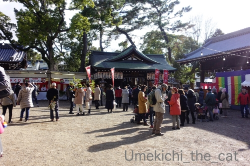
昼間、お買い物途中にのぞいたら結構な賑わい。
鯛の潮汁のお振る舞いがあったり餅まきがあったりするんですよね＾＾
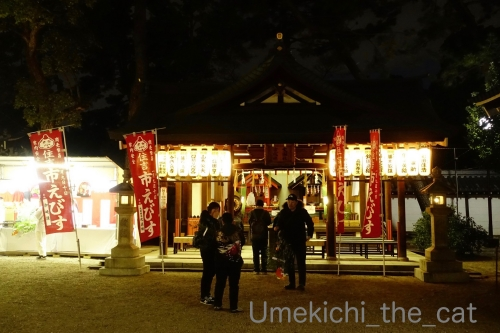
我が家がお参りしたのは夕方になってから。
この時間になると混雑はなくのんびりした雰囲気の中で参拝できます。

ご祈祷中です。

福笹をいただいて縁起物をつけていただきました。
顔見知りになった感のある「福おばちゃん」0(≧▽≦)0今年もおまけしてくれました！
お兄さん達に縁起担ぎの大阪じめで手打ちをしていただいて・・・

最後はやっぱりこのお方！
でっかい招き猫さんの反応は・・・・・
（20秒です。環境音あり）
誘った感ありありですけどー。
今年もしっかり福をキャッチしていただけそうです！

夜の神社は雰囲気あります。

良い月も出ていましたよ。
洗濯機のお兄さんは気に入ったらしい [梅吉]
おっとのインフルエンザ、月曜には熱も下がり火・水と自宅療養。
木曜日からお仕事始めとなりました。
私は！どうやらインフンルエンザウィルスに勝った模様![[手（チョキ）]](https://blog.ss-blog.jp/_images_e/87.gif)
いつも通りよく寝てよく食べて（八分目ですよ）変わったことといえば
いつにも増してお野菜を多めにとってビタミンCのサプリメントを飲んでたことぐらいかな。
ご心配いただいた皆様、ありがとうございましたm(_ _)m
**************************************************************************************************************************

なんや！なんや！！
とビックリまなこの梅吉さんw
先月の消防施設点検に続いてまたもや寝込みを襲われました。
かれこれ15、6年？使った洗濯機を買い替えました。
時々指示以外のことを勝手に始めたり動きが怪しかったので本当に嬉しい。
（例：給水ホースが繋がってない！とエラーが出る。延々すすぎを繰り返すなど、など）
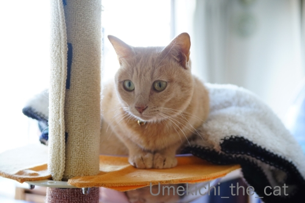
古いのを運び出したり、新しいのを運び入れたりする音を聞いて起き上がってきました。

設置する位置などをお兄さんと確認し合うおかーさん。
・・・・と、ものすごく腰の引けたカフェオレ色がお兄さんの靴下に迫ってます！
お兄さんと話をしていたので気づかなかった私。
それをニヤニヤしながら撮影するおっとw

洗濯機の簡単な使用方法＆注意点の説明をするお兄さんの足にすりすりするカフェオレ色。
私はこの辺りで梅吉がいることに気づきました。
このすりすりを放っておくと次はダンゴムシになって足にガブ蹴りするのです！！
すぐに捕獲される梅吉wwwww
作業が全て終了するまで20分くらい？素早いお仕事で助かりました＾＾

新入りのチェックを入念に行ってます。
このあと何に興奮したのかわーわー鳴きながら走り回ってました(⌒-⌒;

初稼働！
聞きなれないモーター音にイカ耳！！
ドラム式とも思ったのですが「使いにくくて縦型に戻したい」なんて話も聞いたし
ドラム式じゃなきゃいけない理由もなかったので使い慣れた縦型を買いました。
今の洗濯機は縦型でも乾燥機能は標準搭載がほとんどなんですね。
それとゴミを取るネットがなくなってました。
お手入れしやすいカートリッジ式のフィルターみたいなのが付いてます。
へー！！こんなの初めて見ました。
え？私の認識古すぎます？？
洗剤＆柔軟剤の自動投入機能もなくてもいいんじゃない？と思っていたのですが
これが思いの外便利でにっこり。
そしてなにより稼働音が静か！！
古いのは「働いてますよー」と大きな音がしていたのですが
新しいのはだまって仕事をこなす感じ。
最初のうちは本当に動いているのか心配になって時々様子を見に行っちゃいましたw
日本の家電は日々進歩してますものね。（最近はちょっと元気ないけど）
私の知らない約15年間の洗濯機の劇的な進歩を目の当たりにしたのでした。
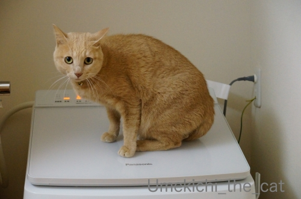
毎日新入りの働きぶりをチェックしに来る梅吉さん。
フタが傾斜しているので山岳地帯に住むヤギさんみたいにあちを踏ん張ってます＾＾
↑ガブッと一押し↑
木曜日からお仕事始めとなりました。
私は！どうやらインフンルエンザウィルスに勝った模様
いつも通りよく寝てよく食べて（八分目ですよ）変わったことといえば
いつにも増してお野菜を多めにとってビタミンCのサプリメントを飲んでたことぐらいかな。
ご心配いただいた皆様、ありがとうございましたm(_ _)m
**************************************************************************************************************************
とビックリまなこの梅吉さんw
先月の消防施設点検に続いてまたもや寝込みを襲われました。
かれこれ15、6年？使った洗濯機を買い替えました。
時々指示以外のことを勝手に始めたり動きが怪しかったので本当に嬉しい。
（例：給水ホースが繋がってない！とエラーが出る。延々すすぎを繰り返すなど、など）
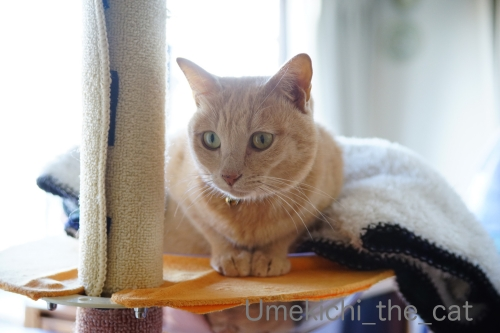
古いのを運び出したり、新しいのを運び入れたりする音を聞いて起き上がってきました。
設置する位置などをお兄さんと確認し合うおかーさん。
・・・・と、ものすごく腰の引けたカフェオレ色がお兄さんの靴下に迫ってます！
お兄さんと話をしていたので気づかなかった私。
それをニヤニヤしながら撮影するおっとw
洗濯機の簡単な使用方法＆注意点の説明をするお兄さんの足にすりすりするカフェオレ色。
私はこの辺りで梅吉がいることに気づきました。
このすりすりを放っておくと次はダンゴムシになって足にガブ蹴りするのです！！
すぐに捕獲される梅吉wwwww
作業が全て終了するまで20分くらい？素早いお仕事で助かりました＾＾
新入りのチェックを入念に行ってます。
このあと何に興奮したのかわーわー鳴きながら走り回ってました(⌒-⌒;
初稼働！
聞きなれないモーター音にイカ耳！！
ドラム式とも思ったのですが「使いにくくて縦型に戻したい」なんて話も聞いたし
ドラム式じゃなきゃいけない理由もなかったので使い慣れた縦型を買いました。
今の洗濯機は縦型でも乾燥機能は標準搭載がほとんどなんですね。
それとゴミを取るネットがなくなってました。
お手入れしやすいカートリッジ式のフィルターみたいなのが付いてます。
へー！！こんなの初めて見ました。
え？私の認識古すぎます？？
洗剤＆柔軟剤の自動投入機能もなくてもいいんじゃない？と思っていたのですが
これが思いの外便利でにっこり。
そしてなにより稼働音が静か！！
古いのは「働いてますよー」と大きな音がしていたのですが
新しいのはだまって仕事をこなす感じ。
最初のうちは本当に動いているのか心配になって時々様子を見に行っちゃいましたw
日本の家電は日々進歩してますものね。（最近はちょっと元気ないけど）
私の知らない約15年間の洗濯機の劇的な進歩を目の当たりにしたのでした。
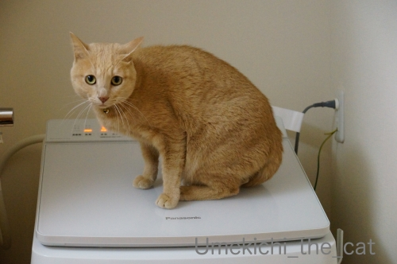
毎日新入りの働きぶりをチェックしに来る梅吉さん。
フタが傾斜しているので山岳地帯に住むヤギさんみたいにあちを踏ん張ってます＾＾
梅吉のお正月休み [梅吉]

ぐる

りん

ぱっ！

からの〜、けりけりけりけり

時々放心しながら休憩して

思い出した様に攻撃。
ちゃんと痛そうなところにキバを立てようとします（じゃれついてるだけです。痛いけどw ）
と、いつものお休みの日はこんな感じでおっとと梅吉のプロレスが見られるのですが・・・
インフルエンザの症状がまだ続いているおっと。
熱が38℃くらいになったり下がったりを繰り返してます。
土曜日にはかかりつけの病院で点滴をして抗生剤等を処方されました。
おっとの会社は感染症にかかったら
「発熱がおさまってからのち２日間は自宅療養すること」と決まっているそうで
（ウィルス撒き散らすから会社に来るな！ってことです）
月曜日から仕事始めですが後２〜3日はお休みかな。
モリモリじゃないけどご飯も食べているしそのうち治るでしょう＾＾

で、梅吉はナース活動に励んでます！
おっとが座るとすかさず膝に乗って温めてあげるw
・・・・・って、体温が高いので気持ち良いのだと思われます( ´艸｀)
でも、夜中時々枕元で様子を見ているし（一緒には寝ない）
なにより足タックルなどで
と誘わない。
とわかっているのでしょうか( ´艸｀)
自然界なら弱っている生き物＝獲物なんでしょうけど
おとーさんじゃ獲物にならないしw 美味しくなさそうだしwww
おっとは「梅吉は心配してくれてるんだ！優しい子だねー」なんて解釈してますけど0(≧▽≦)0
今現在私にインフルエンザの症状は一切現れていません。
このまま乗り切るぞー！
今年の干支になったねこ [梅吉]


年末わたわたしながら買い物をしていた時に見かけたこの被り物。
色と形から「ねずみんさんだ！」と思い込んで買ったのですが
家でよく見たらクマさんだった(⌒-⌒;
クマさんにこの色使うー！？と毒づきながら少々手を加えてみた。
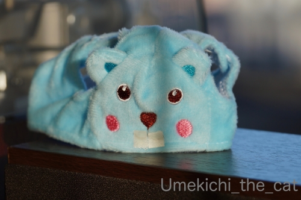
家にあった白い布を切って歯にみたててボンドでぺたり。
我ながら雑な仕事だと思っていたら案の定おっとに「歯がかわいくない」と言われました(ｰ ｰ;)
剥がそうにもがっちりくっついているのでこのまま続行w
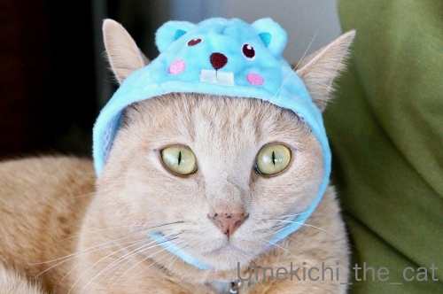
とりあえずクマさんではなくなりましたよね！
・・・・・そう思ってやってくださいm(_ _)m
【追記】
年明け早々発熱して辛そうなおっと。
今朝休日救急病院に行ったのですがインフルエンザ検査は陰性。
でも！！夜になって39℃の熱。
これ絶対インフルエンザですよねぇ。
もうゾフルーザなど早期治療薬が効く時期は過ぎてしまったと思われます。
あとは寝て治すしかないなw
そしてきっと私にも♪来る〜、きっと来る〜♪
私の免疫力とインフルエンザウィルスの勝負、いざっ！！
次回のブログ更新がなかったら「やられた」と思ってくださいwww


カフェオレ色の梅吉

梅吉 2023年8月10日 永眠


梅吉と出会った譲渡会

犬猫の理由なき殺処分ゼロ
妄想広告
UMEKICHI 光

爆発的に早い！
時々攻撃的！
Thanks to Mr.Boss365
爆発的に早い！
時々攻撃的！
Thanks to Mr.Boss365